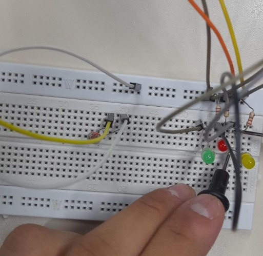

FOTOS E VÍDEOS EXPLICANDO O CONTROLE DE ILUMINAÇÃO:
MONTAGEM FÍSICA:

CÓDIGO C++:

FILMAGEM DO CONTROLE DE ILUMINAÇÃO:
FOTO DAS MEDIDAS REALIZADAS:

PEQUENA EXPLICAÇÃO:
O RESISTOR DEPENDENTE DE LUZ (LDR) É UMA PEÇA ELETRÔNICA VERSÁTIL, USADA PARA MEDIR A INTENSIDADE LUMINOSA E MODIFICAR SUA RESISTÊNCIA EM RESPOSTA A ALTERAÇÕES NA LUMINOSIDADE. COM A UTILIZAÇÃO ADEQUADA DO LDR, PODEMOS GERIR SISTEMAS AUTOMÁTICOS DE ILUMINAÇÃO, MODIFICAR O BRILHO DE ECRÃS OU DISPARAR ALARMES COM BASE EM ALTERAÇÕES NA LUMINOSIDADE DO AMBIENTE. ESTE SENSOR É ESSENCIAL EM PROJETOS DE AUTOMAÇÃO, POSSIBILITANDO A CRIAÇÃO DE SOLUÇÕES EFICAZES E INTELIGENTES PARA VÁRIOS CENÁRIOS, TAIS COMO ILUMINAÇÃO PÚBLICA OU SISTEMAS DE SEGURANÇA.
LIGACÃO LDR NO TINKERCAD: